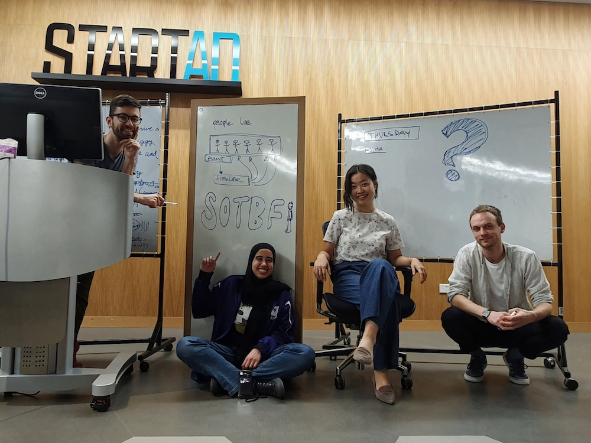

About us
Advocating for Better Technology
(Gabor, Alia, Jihyun and Miha during their April 2019 meetup in Abu Dhabi)
We are software engineers, designers and technologists, advocating for better software that allows members of the public to question its impact on society.
Coming from 4 different countries (Hungary, Egypt, Korea and Solvenia) and living in 4 other (UK, UAE, Singapore and Sweden), we are alumni/student of NYU Abu Dhabi, where we met in a class called Politics of Code that completely changed the way we view and question technology.
With SOTBF, we want to reach an audience that may not be the makers of the very technology that impact them everyday. We want to help them better understand how AI works and how it may affect them, so that they can better demand transparency and accountability in systems that make more and more decisions for us.

Thank you
This project, and our advocacy at large, could not have happened without the trust and help of many.
We would like to thank Mozilla Foundation, Brett and Jenn for having faith in us to deliver a message. NYU Abu Dhabi and the Interactive Media department for giving us the formative education that made us who we are today. Craig and Pierre for opening this door for us in the first place.
And everyone else who spent their weekends giving us feedback, designing assets, sponsoring coffee and making the best knafeh that fueled our late nights - thank you for supporting us in taking this step towards building better technology for all.